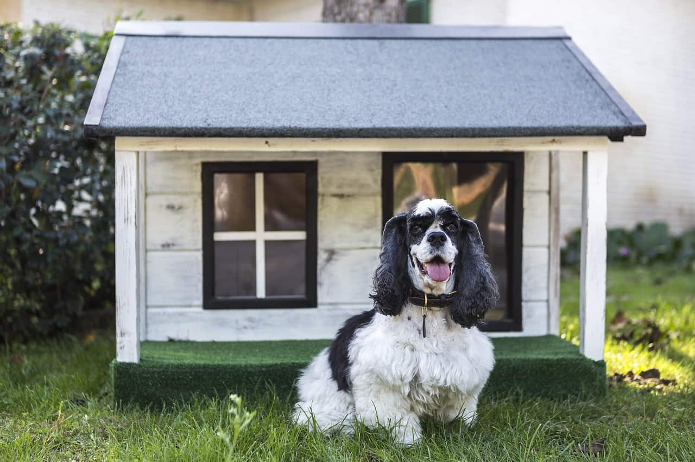

Con el pasar de los años cada vez son más las personas que tienen perros como mascotas, esto sumado a la pandemia provocó que el número aumentara, y ya en Argentina el 78% de las personas tiene un perro con el cual conviven todos los días. Pensando en eso nos dimos cuenta que también hay muchas personas que tienen a su perro hace un tiempo muy corto, o que el mismo perro puede ser de una edad muy joven como para quedarse solo en su casa durante unos días, por eso creamos nuestra aplicación llamada “Casa de Perros” la cual es una aplicación que está enfocada en facilitar a esas personas que se van de viaje, ya sea por mucho o poco tiempo, el cuidado de su mascota. Muchas veces pasa que las personas se van de vacaciones o de viaje de trabajo por ejemplo, y la casa queda sola con el perro, muchos tienen la solución fácil de llamar a un familiar y que vaya a la casa a cuidarlo, o llevárselo a la casa antes de irse, esto para que el pobre animal no esté solo, y tenga los cuidados necesarios, como agua, comida, salidas a caminar y lugar para hacer sus necesidades. Casa de perros está orientada a aquellas personas que viajan muy seguido o por un largo tiempo y no tienen dónde o con quien dejar a sus amigos caninos. Esta busca facilitar la obtención de un lugar/cuidador para tu perro, esto mediante una aplicación en la cual vos ingresas los datos importantes sobre tu perro, además del tiempo que buscas que lo cuiden, como una semana o un mes, y la aplicación te sugiere unos candidatos para esa operación buscada, estos pueden ser personas comunes ofrecidas como voluntarios, las cuales tienen que ser aprobadas por la compañía, o también pueden ser veterinarias y centros especializados. En ambos casos la persona tendrá acceso a la información del lugar y personas, datos como la localización del lugar o contactos para que pueda hablar con las personas antes de aceptar la operación. Además de que la app tendrá un sistema de calificación por estrellas con el cual se podrá comprobar el servicio de los lugares y voluntarios.
Los responsables son las personas las cuales viven con los perros. Esta aplicacion esta principalmente enfocada en ellos y en que sus compañeros de vida tengan un lugar seguro donde quedarse cuando ellos tienen un viaje largo. Ellos tendran la oportunidad de elegir con quien y donde se quedara el perro para garantizarles el mejor cuidado posible. Tras volverde su viaje y pasar por su perro la persona podra valorar el cuidado de la persona/lugar y poner un pequeño comentario de si siguio los cuidados y como esta el perro. Con la facilitacion de comunicacion que la app provee, se podra mantener en contacto durante el cuidado de a mascota, para en caso de cualquier inconveniente ambos lados tengan una linea directa al otro.
Los Voluntarios son centros especializados, veterinarias o personas (las cuales fueron aprobadas previamente) las cuales se encargaran de el perro al cual sean asignados.
Los responsables podran decidir si los voluntarios van a su casa a cuidar al perro o si llevan a los perros a sus casas. A los voluntarios se les informara de los cuidados especificos que necesitara cada perro. Al final del tiempo de cuidado la persona podra valorar la calidad de cuidado del voluntario y si el perro recibio todas las especificaciones al pie de la letra.
En estos casos la aplicacion se encargara de informar a los responsables los diferentes lugares en donde pueden dejar a sus perros en estas distintas instituciones y los responsables podran elegir segun sus criterios. La aplicacion proporcionara ubicacion, contacto, ya sea telefonico, mail o ambos, y en caso de tener pagina web oficial tambien la proporcionara.